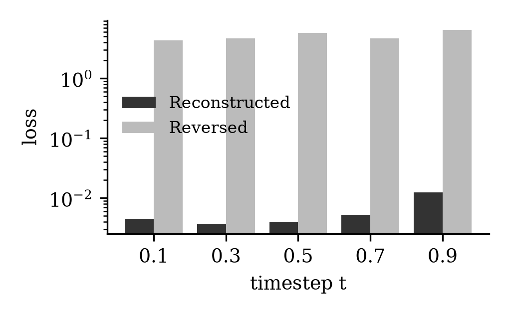

Abstract—Small clothing sellers on Instagram and WhatsApp usually have only a flat photograph of each garment, while buyers respond to seeing it worn. Virtual try-on models generate that photograph from a picture of a person and a picture of a garment. This report studies FASHN VTON 1.5, a 972-million-parameter multimodal diffusion transformer that generates directly in pixel space by rectified flow, and which was released as inference code only, with no training code and no paper. Four contributions are reported. First, a layer-by-layer analysis of the network and its preprocessing pipeline from the released source. Second, a reconstruction of the training objective from the sampler, and a complete Low-Rank Adaptation (LoRA) fine-tuning framework built on it. Third, verification on the real weights: the re-implemented inference path reproduces the original exactly (mean pixel difference 0.00), and the pretrained model's loss under the reconstructed objective is 863 times lower than under the opposite convention. Fourth, a serving system that works within a free GPU quota, with a measured baseline: tops scored 28/30 and 30/30 on a six-criterion rubric, and a system change raised a failing bottom garment from 11/30 to 29/30. The LoRA configuration trains {{LORA_PCT}}% of the parameters. {{ABSTRACT_MICRO}} A fine-tuning run on real paired data, and therefore any claim of improved try-on quality from fine-tuning, was not achieved and is stated as future work.
Index Terms—virtual try-on, diffusion transformer, rectified flow, classifier-free guidance, LoRA, parameter-efficient fine-tuning
I. Introduction
A large number of small clothing businesses in India sell through Instagram and WhatsApp: home boutiques, resellers and local makers. Their product photographs are typically flat-lays taken on a bed or a hanger with a phone. Established brands show the same garments on models, which communicates fit, length and drape. A model shoot costs money and time that a small seller does not have.
Virtual try-on (VTON) addresses this gap. Given a photograph of a person and a photograph of a garment, a VTON model generates the person wearing the garment. If the output preserves the product faithfully, a seller can turn one flat photograph into an on-model photograph in seconds.
The strongest open model available at the start of this project, FASHN VTON 1.5 [1], was released as weights and inference code only. This leaves three problems. Understanding: how the network combines the two images is documented only in source code. Adaptation: the model appears to have been trained mostly on Western retail clothing, while kurtis, salwar suits, dupattas, sarees and lehengas differ in length, drape, borders and embroidery; adapting it needs a training procedure that the release does not include. Constraints: the project had no budget, an Apple M3 laptop with 8 GB of shared memory, and a free hosted quota of about five GPU-minutes per day.
The contributions of this project are:
- a layer-by-layer description of the network and pipeline derived from 2,762 lines of released source (Section III);
- a reconstructed rectified-flow training objective with a garment-weighted loss, verified in two independent ways (Sections IV-A, VI-A, VI-B);
- a LoRA fine-tuning framework with 12 automated tests, including support for new garment categories (Section IV);
- the finding, proved on the real weights, that the pipeline's only non-commercially-licensed component is unused in the mode this application needs (Section VI-B);
- engineering that runs the 972M model in 8 GB (Section IV-E) and a serving system with a measured baseline (Sections V, VI-C).
What is not claimed. The try-on network is the work of FASHN AI; its architecture and pretrained weights are theirs. No fine-tuning run on real paired data was performed, so no improvement in try-on quality from LoRA is claimed. Section VI-E reports a short run that tests the training machinery and states what it does and does not show.
II. Related Work
Image-based try-on began with VITON [2], which removes the clothing region of the person image, warps the garment to the body with a thin-plate spline and blends the two. CP-VTON [3] learned the warp; VITON-HD [4] raised the resolution and supplied the standard benchmark; DressCode [5] added lower-body garments and dresses. These methods preserve texture where the warp is right and fail at occlusions and large shape changes.
Diffusion models [6], made practical at high resolution by latent diffusion [7], replaced explicit warping with learned attention between garment and person. TryOnDiffusion [8] used two communicating U-Nets; OOTDiffusion [9] and IDM-VTON [10] inject features from a garment encoder into the denoiser; CatVTON [11] showed that concatenating garment and person in the input is sufficient. Most of these generate in a VAE latent space, whose 8× compression blurs small details such as printed text, and most need a mask that fixes the garment's extent in advance.
The Diffusion Transformer [12] replaced the U-Net with a transformer over patches. Rectified flow [13] and flow matching [14] recast generation as following a straight path from noise to data. Stable Diffusion 3 [15] combined both in the multimodal diffusion transformer (MMDiT) with logit-normal timestep sampling, and FLUX.1 [16] added single-stream blocks. Classifier-free guidance [17] trains the model with and without its conditions and extrapolates between the two at sampling time. FASHN VTON 1.5 adapts FLUX.1 to try-on: the garment image takes the place of the text prompt, and the model works on pixels with no VAE.
LoRA [18] freezes each pretrained weight W and learns a low-rank update ΔW = (α/r)BA. With B initialised to zero, training starts from exactly the pretrained model; the adapter is small, mergeable and removable.
FASHN VTON 1.5 was chosen over the alternatives because it accepts flat-lay photographs, needs no mask, has an Apache-2.0 licence for model and code, has a free official hosted demo, and is small (about 2 GB). The gap this project addresses is that its users cannot adapt it, because the training procedure is unpublished.
III. The Base Model
This section describes the model as released [1]; the design is FASHN's, the description is this project's.
A. Preprocessing
Table I lists the stages before the network. In masked mode the old garment is greyed out and repainted, so the new garment cannot extend beyond the mask. In segmentation-free mode, the default and the mode used here, the model sees the whole person and decides itself what to replace. This preserves the body and leaves the length free, but the old outfit's shape can leak into the result (Section VI-C).
Table I: Preprocessing Stages
| Stage | Model | Output |
|---|---|---|
| Resize to fit 864 px | — | Person, garment |
| Person pose | YOLOX-L [19] + DWPose [20] | Grey skeleton, one grey level per limb |
| Garment pose | Same; blank for flat-lay | Skeleton image |
| Human parsing | SegFormer parser [21], 18 labels | Per-pixel body and clothing labels |
| Agnostic person | — | Masked: garment greyed. Seg-free: unchanged |
| Pad, scale | — | 864 × 576, values in [−1, 1] |
B. Combining the Person and the Garment
The two photographs are combined in three places. (1) Channel concatenation. The person stream stacks the current noisy image (3 channels), the person photograph (3) and the pose drawing (1), 7 channels in all; the garment stream stacks the garment photograph (3) and its pose (1). (2) Patch embedding. Each stream is cut into 12 × 12-pixel patches by a strided convolution, giving 72 × 48 = 3,456 tokens of width 1,280 per stream. There is no VAE. (3) Joint attention. The garment tokens occupy the position that text tokens occupy in FLUX.1, and in every double-stream and single-stream block all 6,912 tokens attend to each other. A person token at the chest can read directly from the garment token holding the logo. This is how garment detail reaches the body; no warping is involved.
Position is encoded by rotary embeddings on three axes of dimensions (16, 56, 56). A conditioning vector, the sum of a timestep embedding and a category embedding (0 none, 1 tops, 2 bottoms, 3 one-pieces), modulates every block by adaptive layer normalisation.
Fig. 1: The try-on transformer. Grey groups are where this project attaches LoRA adapters by default.
C. The Transformer, Layer by Layer
Fig. 1 and Table II give the structure. Hidden size is 1,280, with 10 attention heads of 128 dimensions and MLP ratio 4. The four patch-mixer blocks let neighbouring 12 × 12 patches of the person agree before they meet the garment, which compensates for the missing VAE. In each double-stream block each stream has its own attention projections and MLP, but attention is computed jointly over both streams. Each single-stream block fuses the attention projections and the MLP input into one linear layer and the two outputs into another.
Table II: Layers of the Try-On Transformer
| Group | No. | Tokens | Function |
|---|---|---|---|
| Patch embedders | 2 | 3,456 | Pixels to tokens, per stream |
| Patch mixer | 4 | 3,456 | Person self-attention |
| Double-stream | 8 | 6,912 | Garment detail reaches the body |
| Single-stream | 16 | 6,912 | Joint refinement |
| Final layer | 1 | 3,456 | Tokens to velocity image |
| Parameters | 972 M (model card); {{TOTAL_M}} M counted here | ||
D. Generation by Rectified Flow
Sampling starts from Gaussian noise x at t = 0. The model predicts a velocity v(x, t), the direction from noise towards the photograph, and an Euler step x ← x + Δt·v is taken until t = 1. Step sizes follow a schedule shifted with μ = 1.5, placing more steps near the noise end where the layout is decided. At every step the model runs twice, with all conditions and with every condition zeroed, and the velocity used is
v = vuncond + 1.5 (vcond − vuncond).
Guidance is skipped on the last step. One photograph therefore costs 30 × 2 = 60 forward passes of the network over 6,912 tokens.
E. Compute and Memory
Table III: Compute and Memory
| Quantity | Value | Source |
|---|---|---|
| Weights on disk (bf16) | {{BASE_MB}} MB | Measured |
| GPU memory, inference | about 8 GB | Model card [1] |
| Apple M3: after load / after generating | 2.04 / 4.05 GB | Measured |
| Forward passes per photo | 60 | Sampler |
| Arithmetic per photo | order of 1015 operations | Estimate, not measured |
| Hosted GPU | RTX Pro 6000, 48 GB slice, per call | ZeroGPU docs [22] |
| Time per photo, hosted | 13.5 s warm, ~31 s cold | Measured |
| Time per photo, H100 | about 5 s | Model card [1] |
| Time per photo, M3 8 GB | 1,344 s | Measured |
| Free hosted quota | 5 GPU-min per day; refused after 8 runs | Docs [22]; measured |
IV. Proposed Work
A. Reconstructing the Training Objective
A model can only be fine-tuned with an objective compatible with the one it was trained with, and FASHN has not published theirs. The sampler, however, constrains it almost completely. It integrates from noise at t = 0 to the image at t = 1 with straight Euler steps, so training points lie on the line xt = (1 − t)·noise + t·image and the network must predict the velocity along it, image − noise. Its schedule is shifted towards noise with μ = 1.5, so training timesteps should be concentrated the same way. Guidance removes all conditions together, so training must sometimes drop them together. Listing 1 gives the resulting objective.
t ~ sigmoid( N(0,1) − 1.5 ) noise ~ N(0, I) x_t = (1 − t)·noise + t·photo target = photo − noise # velocity loss = mean( w·(model(x_t, t, cond) − target)² ) w = 0 on padding, 1 elsewhere, 2 on garment pixels with probability 0.1: all conditions zeroed
Listing 1: The reconstructed training objective.
Design choice of this project. The weight of 2 on garment pixels makes an error on the product cost twice as much as an error on the background: for a seller a wrong print is a wrong product. The garment pixels are found by running the human parser on the target photograph.
What is uncertain. The direction of time and the velocity target are fixed by the sampler and are verified in Section VI. The timestep distribution, the dropout probability and the garment weight are standard or chosen values; those FASHN used are unknown.
B. LoRA Adapters
Each selected linear layer is wrapped: the original weight is frozen and two small matrices are added beside it, A (input → rank 16) and B (rank 16 → output), so that y = Wx + (α/r)BAx. B starts at zero, so the adapted model is initially identical to the original. Three details were specific to this model. Adapters are kept in float32 although the base weights are bf16, because an update of the size a learning rate of 10−4 produces is lost in bf16's 8-bit mantissa. The modulation layers, which translate timestep and category into scale, shift and gate for every block, are not adapted. And in single-stream blocks one adapter on the fused layer covers attention and MLP together.
The default target set wraps the attention and MLP layers of the 8 double-stream and 16 single-stream blocks (Table IV). {{LORA_COUNT_SENTENCE}}
Table IV: LoRA Adapter Parameters, Rank 16
(an adapter on a layer with in inputs and out outputs has 16 × (in + out) parameters)
| Layer | in → out | Layers | Parameters |
|---|---|---|---|
| Double, attention qkv | 1280 → 3840 | 16 | 1,310,720 |
| Double, attention out | 1280 → 1280 | 16 | 655,360 |
| Double, MLP in | 1280 → 5120 | 16 | 1,638,400 |
| Double, MLP out | 5120 → 1280 | 16 | 1,638,400 |
| Single, linear1 | 1280 → 8960 | 16 | 2,621,440 |
| Single, linear2 | 6400 → 1280 | 16 | 1,966,080 |
| Total | 96 | 9,830,400 | |
C. Data and New Categories
A training sample needs a photograph of a person wearing a garment (the target) and a photograph of the garment alone. The data code reproduces FASHN's preprocessing line for line, so a fine-tuned model is trained on exactly the inputs it will receive. Two kinds of sample follow the model card's description of FASHN's training: paired, masked samples, and synthetic triplets for segmentation-free mode, in which the base model first dresses the same person in a different garment and the model learns to turn that image back into the real photograph. The target is always real, so the model cannot learn its own errors. No horizontal flip is used: every limb has its own grey level in the pose drawing, and a mirrored print is a different product.
The category embedding has rows for none, tops, bottoms and one-pieces. For sarees and lehengas the framework adds rows, each starting as a copy of the one-pieces row and trained with the adapters; a test verifies that existing categories are unaffected.
Data is the main obstacle. No public paired dataset of Indian garments in this form is known to the author. The plan is 300–500 garments from local sellers, with consent, split 85/15 by garment.
D. Training and Evaluation
Defaults are rank 16, AdamW at 10−4 with weight decay 0.01, 100 warm-up steps then cosine decay, 2,000 steps at batch 1 with 4-step accumulation, gradient clipping at 1.0, bf16 autocast and gradient checkpointing. Validation loss is computed at fixed noise and timesteps every 200 steps and the best adapter is kept. These are standard values and have not been tuned on data. Evaluation generates every held-out sample with the base model and with the adapter from the same inputs and seed, and compares each with the real photograph by PSNR, SSIM [23] and mean absolute error on the garment pixels, alongside a six-criterion human rubric.
E. Running a 972M Model in 8 GB
FASHN's pipeline supports CUDA and CPU. To verify anything on the real weights it had to run on an Apple M3 with 8 GB shared between CPU and GPU. Four changes made this possible. The loader builds the model on PyTorch's “meta” device and assigns the saved bf16 tensors directly, where the original first builds a 3.9 GB float32 model; memory after loading is 2.04 GB. Attention over 6,912 tokens, about 1.9 GB per matrix for a guidance batch, is computed two heads at a time. The rotary embedding is computed in float32, since Apple GPUs lack float64. And bf16 is enabled on the Apple GPU. Tests confirm that the last three leave outputs unchanged, and Section VI-B confirms it end to end.
V. The Serving System
The model is served through a web application (Next.js, TypeScript) whose try-on layer was designed around a small free GPU quota. Every request passes through one function. Inputs are rotated upright, flattened onto white, limited to 1,536 px and stripped of metadata. A content-addressed cache, keyed by a hash of both prepared images and all settings including the seed, ensures an identical request never reaches the GPU twice. Identical concurrent requests share one job and different requests run one at a time. The model sits behind an Engine interface, so a fine-tuned model served from the project's own endpoint would be one new file, and every failed attempt in a fallback chain is reported. Each preset model photograph records what the model is wearing, and the interface warns when a garment category does not suit it (Section VI-D). A quota meter records GPU seconds and runs and learns the provider's unpublished daily run limit from the first refusal.
VI. Evaluation
Local experiments ran on an Apple MacBook Air (M3, 8 GB) with PyTorch's MPS backend. Hosted inference used the official FASHN VTON 1.5 Space on Hugging Face ZeroGPU with a free account. Settings unless stated: 30 steps, guidance 1.5, seed 42, segmentation-free, flat-lay garment.
A. Correctness Tests
The framework has 12 automated tests that run on a small randomly initialised copy of the architecture; all pass. They check that a model with fresh adapters equals the original, that only adapters train, that saving, loading and merging agree, that timesteps lean towards noise (median 0.18), that condition dropout removes every condition, that checkpointing, chunked attention and the float32 rotary embedding leave results unchanged, that a new category leaves old ones intact, and that the whole training loop runs. The application has a further 54 tests, all passing.
The decisive test trains a small model with the reconstructed objective to reproduce one image and then samples it with FASHN's own, unmodified sampler. The error against the target falls from 0.80 to 0.005, a 99.4% reduction. With time reversed it rises from 0.80 to 1.14.
B. Checks on the Real Weights
Table V: Checks on the Released Weights
| Check | Result |
|---|---|
| This project's inference vs FASHN's pipeline, 4 steps | 0.00 / 255 mean difference (identical) |
| Parser replaced by a stub, 4 steps | 0.00 / 255 (identical) |
| Loss, reconstructed convention, mean over t = 0.1 … 0.9 | 0.0060 |
| Loss, reversed convention, same points | 5.14 (863× higher) |
| Local vs hosted result, same inputs and seed | 7.0 / 255, PSNR 22.4 dB |
Table V gives four results. The re-implemented inference path, with all changes of Section IV-E, is exact. Replacing the human parser with a stub that returns nothing changes no pixel: in segmentation-free mode with a flat-lay garment its output is discarded, so it can be skipped, which also removes the only non-commercially-licensed component from this path. The pretrained model's loss is 0.0045, 0.0037, 0.0040, 0.0052 and 0.0124 at t = 0.1 to 0.9 under the reconstructed convention and between 4.3 and 6.4 under the reversed one (Fig. 2): the released weights agree with the reconstructed objective, so fine-tuning continues FASHN's training instead of opposing it.

Fig. 2: Training loss of the pretrained model under the reconstructed and the reversed convention (logarithmic scale).
Finally, a local 30-step run and the hosted run give the same garment and pose but not the same pixels (Fig. 3). The probable cause is that random noise is generated differently on Apple and NVIDIA GPUs; this was not investigated further.

Fig. 3: Hosted result (left) and local result on the Apple M3 (right) for the same inputs and seed.
C. Try-On Quality Baseline
Four try-ons were produced with the hosted model and scored on six criteria of 5 points each: colour, print, neckline or waist, sleeves or length, shape, and absence of artefacts (Table VI, Fig. 4). Scores were given by eye by a single rater and are not yet confirmed by a second; four images is a small sample.
Table VI: Baseline Rubric Scores
| Garment | Model wearing | Score | % | Time (s) |
|---|---|---|---|---|
| Black logo tee | Tee + chinos | 30/30 | 100.0 | 30.8 |
| Navy eyelet crop top | Dress | 28/30 | 93.3 | 13.5 |
| White tiered skirt | Dress | 11/30 | 36.7 | 13.5 |
| White tiered skirt | Tee + shorts | 29/30 | 96.7 | 31.7 |

Fig. 4: Baseline try-ons, rows 1–3 of Table VI. Columns: garment, model photograph, result.
Tops are reproduced faithfully, including the printed text on the logo tee, the hardest case for a generative model. Generation takes 13.5 s when the hosted GPU worker is warm and about 31 s when cold. The failure is the skirt on a model wearing a dress: with no separate lower garment to replace, the skirt blends into the dress.
D. Improvement from the System Change
The skirt failure was traced to the choice of model photograph, not to the garment or the network. The serving system was changed so that each preset records what the model wears and which categories it suits, and bottoms are steered to a model in separates. The same skirt with the same settings and seed then scored 29/30 instead of 11/30 (Fig. 5): +18 points, +60.0 percentage points, a relative gain of 163.6%. This is the one measured improvement in output quality in this project. It comes from how the model is used, not from changing the model, and rests on a single garment.

Fig. 5: The tiered skirt on a model wearing separates (29/30). Compare row 3 of Fig. 4 (11/30).
E. LoRA on the Real Weights
{{MICRO_SECTION}}F. Summary
Table VIII: Summary of Measured Numbers
| Quantity | Value |
|---|---|
| Framework / application tests passing | 12 of 12 / 54 of 54 |
| Convention test, reconstructed objective | error 0.80 → 0.005 (−99.4%) |
| Convention test, reversed objective | error 0.80 → 1.14 (+43%) |
| Re-implemented vs original inference | identical |
| Output change with parser removed | none |
| Pretrained loss, reconstructed vs reversed | 0.0060 vs 5.14 (863×) |
| Rubric, tops | 100% and 93.3% |
| Rubric, skirt, before → after system change | 36.7% → 96.7% |
| Memory after load, original → this project | 3.9 → 2.04 GB (−48%) |
| LoRA trainable parameters | {{LORA_M}} M of {{TOTAL_M}} M ({{LORA_PCT}}%) |
| Try-on quality gain from fine-tuning | not measured |
VII. Discussion and Limitations
The central question, whether LoRA fine-tuning on Indian garments improves try-ons of Indian garments, is not answered by this report. The framework to answer it exists and is verified; the paired data and the GPU time do not yet. Further limitations should be stated plainly. The quality baseline is four images scored by one rater. The training hyper-parameters and the garment weight are defaults, not tuned values. The model's output is at most 864 × 576 pixels, so Instagram sizes need enlargement. The cause proposed for the difference between local and hosted results is a hypothesis. The sweep over inference settings was not run, because one image takes about 22 minutes on the available machine.
A more general observation is that a model released without its training procedure is not closed to adaptation. The sampler and the conditioning code together determine the objective closely enough to reconstruct it, and the released weights themselves provide the check.
VIII. Conclusion and Future Work
This project took a state-of-the-art virtual try-on model released without a training procedure and made it understandable, measurable and adaptable. The network was documented layer by layer. Its training objective was reconstructed and verified twice, on a small model sampled by the original sampler and on the real weights. A LoRA fine-tuning framework was built on that objective and tested. The analysis showed that the pipeline's only non-commercially-licensed component is unused in the mode this application needs. Around the model, a serving system was built that works within a free GPU quota, and a change to it raised a failing case from 36.7% to 96.7% on the rubric.
The next steps are, in order: collect 300–500 paired photographs of Indian garments from sellers, with consent; fine-tune on a CUDA GPU with at least 16 GB and compare base and adapter on held-out garments with two raters; add saree and lehenga as new categories; serve the adapted model from the project's own endpoint with the parser skipped; run the sweep over inference settings; and evaluate a super-resolution step against the garment metric.
Acknowledgment
The author is grateful to Dr. Nishant Gupta, Assistant Professor in the Department of Communication and Computer Engineering, The LNM Institute of Information Technology, Jaipur, for supervision and for directing this work towards the model itself. Thanks are due to FASHN AI for releasing FASHN VTON 1.5 and its inference code under a permissive licence, and to Hugging Face for the free ZeroGPU service on which the hosted results were produced.
References
- FASHN AI, “FASHN VTON 1.5,” model card and source code, 2026. [Online]. Available: https://huggingface.co/fashn-ai/fashn-vton-1.5
- X. Han, Z. Wu, Z. Wu, R. Yu, and L. S. Davis, “VITON: An image-based virtual try-on network,” in Proc. CVPR, 2018.
- B. Wang et al., “Toward characteristic-preserving image-based virtual try-on network,” in Proc. ECCV, 2018.
- S. Choi, S. Park, M. Lee, and J. Choo, “VITON-HD: High-resolution virtual try-on via misalignment-aware normalization,” in Proc. CVPR, 2021.
- D. Morelli et al., “Dress Code: High-resolution multi-category virtual try-on,” in Proc. ECCV, 2022.
- J. Ho, A. Jain, and P. Abbeel, “Denoising diffusion probabilistic models,” in Proc. NeurIPS, 2020.
- R. Rombach, A. Blattmann, D. Lorenz, P. Esser, and B. Ommer, “High-resolution image synthesis with latent diffusion models,” in Proc. CVPR, 2022.
- L. Zhu et al., “TryOnDiffusion: A tale of two UNets,” in Proc. CVPR, 2023.
- Y. Xu, T. Gu, W. Chen, and C. Chen, “OOTDiffusion: Outfitting fusion based latent diffusion for controllable virtual try-on,” arXiv:2403.01779, 2024.
- Y. Choi, S. Kwak, K. Lee, H. Choi, and J. Shin, “Improving diffusion models for authentic virtual try-on in the wild,” in Proc. ECCV, 2024.
- Z. Chong et al., “CatVTON: Concatenation is all you need for virtual try-on with diffusion models,” arXiv:2407.15886, 2024.
- W. Peebles and S. Xie, “Scalable diffusion models with transformers,” in Proc. ICCV, 2023.
- X. Liu, C. Gong, and Q. Liu, “Flow straight and fast: Learning to generate and transfer data with rectified flow,” in Proc. ICLR, 2023.
- Y. Lipman, R. T. Q. Chen, H. Ben-Hamu, M. Nickel, and M. Le, “Flow matching for generative modeling,” in Proc. ICLR, 2023.
- P. Esser et al., “Scaling rectified flow transformers for high-resolution image synthesis,” in Proc. ICML, 2024.
- Black Forest Labs, “FLUX.1,” source code, 2024. [Online]. Available: https://github.com/black-forest-labs/flux
- J. Ho and T. Salimans, “Classifier-free diffusion guidance,” arXiv:2207.12598, 2022.
- E. J. Hu et al., “LoRA: Low-rank adaptation of large language models,” in Proc. ICLR, 2022.
- Z. Ge, S. Liu, F. Wang, Z. Li, and J. Sun, “YOLOX: Exceeding YOLO series in 2021,” arXiv:2107.08430, 2021.
- Z. Yang, A. Zeng, C. Yuan, and Y. Li, “Effective whole-body pose estimation with two-stages distillation,” in Proc. ICCV Workshops, 2023.
- E. Xie et al., “SegFormer: Simple and efficient design for semantic segmentation with transformers,” in Proc. NeurIPS, 2021.
- Hugging Face, “Spaces ZeroGPU,” documentation, 2026. [Online]. Available: https://huggingface.co/docs/hub/spaces-zerogpu
- Z. Wang, A. C. Bovik, H. R. Sheikh, and E. P. Simoncelli, “Image quality assessment: From error visibility to structural similarity,” IEEE Trans. Image Process., vol. 13, no. 4, pp. 600–612, 2004.